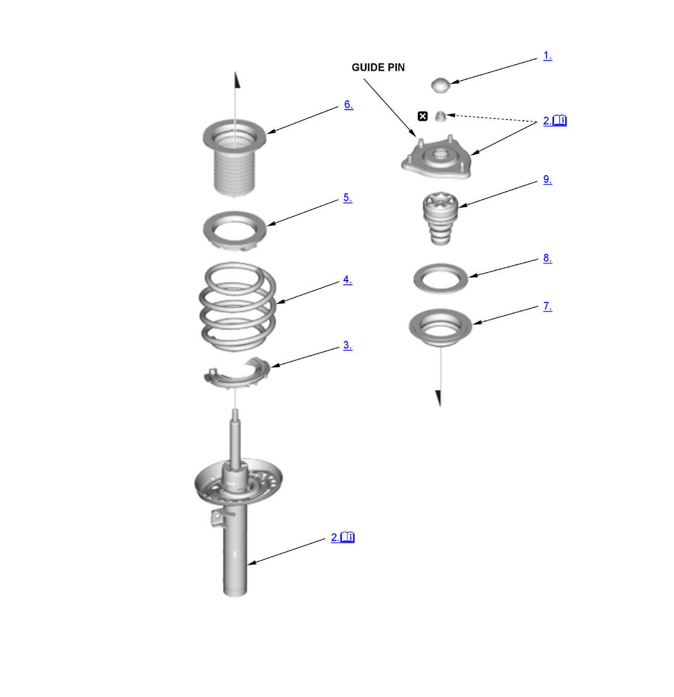

Front Damper/Spring Disassembly, Reassembly, and Inspection: Disassembly: Procedure
NOTE:
Numbered call-outs in figure pertain to list numbers in following procedure.

Courtesy of HONDA, U.S.A., INC. |
Detailed information, notes, and precautions |
 |
Replace |
- Damper Cap - Remove
- Damper Unit, Damper Mounting Base - Remove
1. Set the damper/spring to the strut spring compressor. 2. Compress the damper spring.
NOTE: Do not compress the spring more than necessary to remove the nut.
3. Remove the self-locking nut (A) with the strut nut adapter (B), while holding the damper shaft with a hex wrench (C).
4. Remove the damper unit.
5. Release the pressure from the strut spring compressor.
6. Remove the damper mounting base/damper spring from the strut spring compressor.
- Lower Spring Seat Rubber - Remove
- Damper Spring - Remove
- Upper Spring Seat Rubber - Remove
- Dust Cover - Remove
- Upper Spring Seat - Remove
- Damper Mounting Bearing - Remove
- Bump Stop - Remove